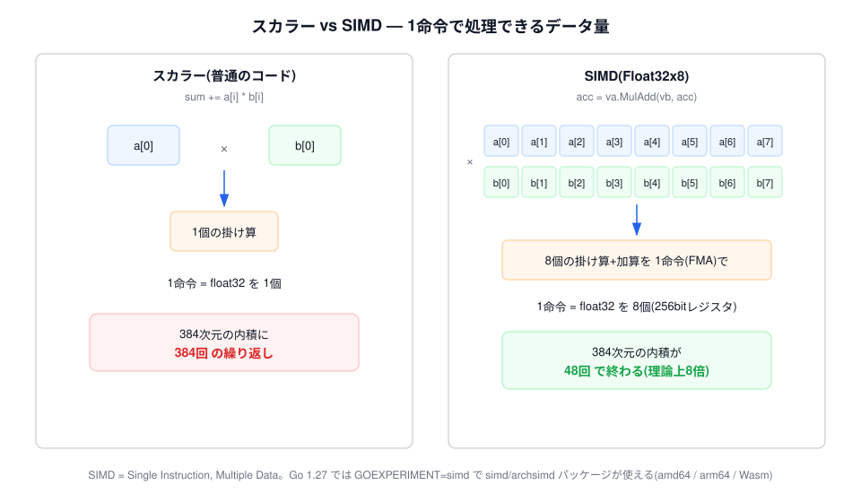
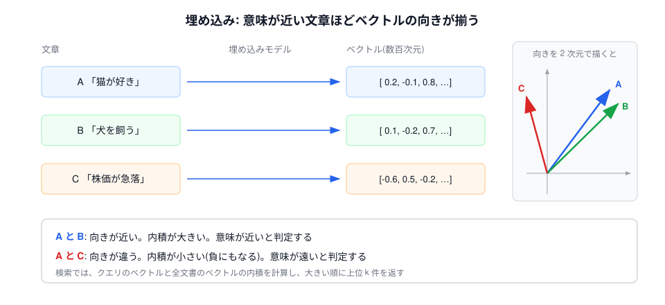
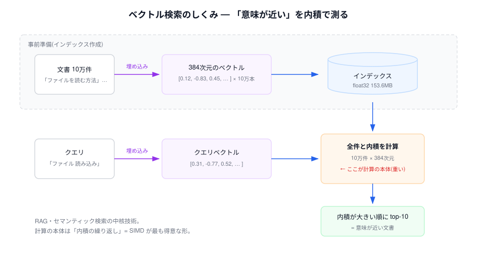
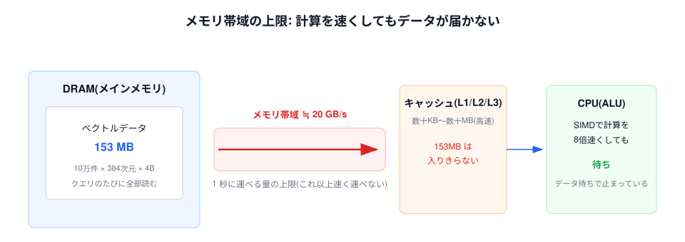
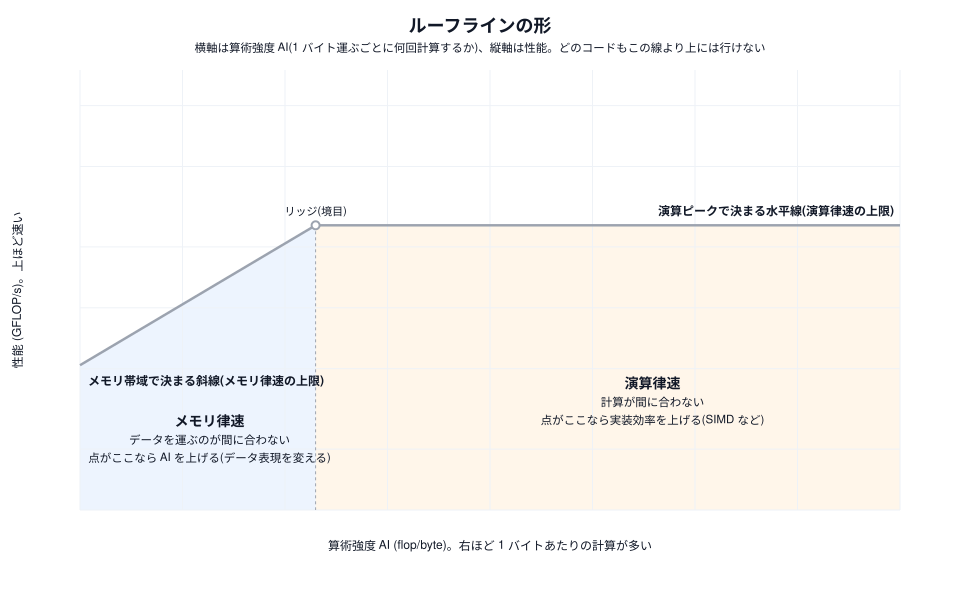
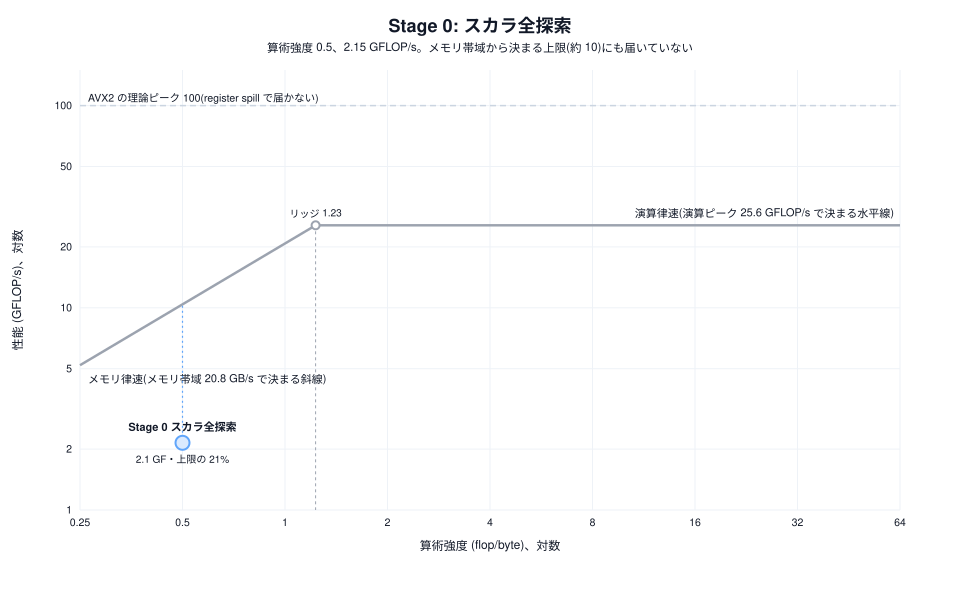
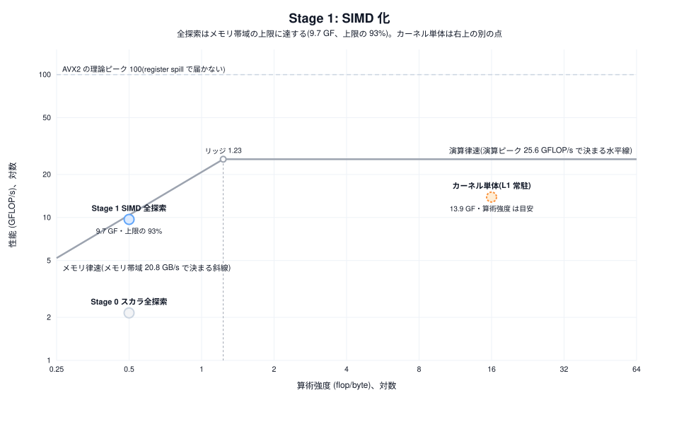

Go Conference 2026 ショートワークショップ
前半 — 測って、予測するまで
10 万件のベクトルを全部見にいく検索が、いま 35.9 ms かかっています。
これを速くします。ただし、闇雲に SIMD を足すことはしません。
| 内容 | 持ち帰るもの | |
|---|---|---|
| 前半（いまここ） | SIMD とは／題材／ルーフラインで上限を測る | どこまで速くなるかの予測 |
| 後半（手を動かす） | SIMD 化・量子化・rerank を順に試す | 予測との答え合わせ |
覚えて帰ってほしいのは高速化の小技ではなく、「先に測ってから手を選ぶ」という順番です。
内積を普通に書くと、こうなります。
var sum float32
for i := range a {
sum += a[i] * b[i] // 1 個ずつ かけて 足す
}1 命令で float32 を 1 個。これをスカラ処理と呼びます。
SIMD（Single Instruction, Multiple Data）は、1 命令で複数のデータを まとめて処理する CPU の機能。256bit のベクトルレジスタには float32 が 8 個入ります。

GOEXPERIMENT=simd を付けると simd/archsimd が使えます（実験的機能）。
アセンブリも cgo も書かず、メソッド呼び出しがほぼそのまま 1 つの CPU 命令になります。
va := archsimd.LoadFloat32x8(a) // float32 を 8 個ロード
vb := archsimd.LoadFloat32x8(b)
acc = va.MulAdd(vb, acc) // acc += va*vb を 8 レーン同時に（FMA）内積の sum += a[i] * b[i] は「掛けて足す」の形そのもの。
FMA（Fused Multiply-Add）1 命令で 8 要素ぶんが片付きます。
| ① 型がデータの形 | Float32x8 = float32 を 8 レーン = 256bit。型を選ぶことが、使う命令幅とレーン数を選ぶことになる |
| ② メソッド = 1 命令 | MulAdd → VFMADD、Xor → VPXOR。メソッド名から出てくる機械語の見当がつく |
| ③ 実行時にガード | 未対応 CPU で呼ぶと panic する。archsimd.X86.AVX2() && archsimd.X86.FMA() で確認してから使う |
対応は amd64（AVX2 / AVX-512）、arm64（Neon）、WebAssembly。
本日は amd64 の AVX2 + FMA だけで進めます。
archsimd はアーキごとに型も命令も違う API です。
アーキに依存しない書き方をしたい場合は、次のページ。
同じく 1.27 で入った simd パッケージは、型名からレーン数が消えます
（Float32x8 ではなく Float32s）。幅は実行時に CPU が決めます。
var acc simd.Float32s // レーン数を型に書かない
n := acc.Len() // このマシンのレーン数（4 / 8 / 16）
for len(a) >= n {
acc = simd.LoadFloat32s(a).MulAdd(simd.LoadFloat32s(b), acc)
a, b = a[n:], b[n:]
}同じソースが amd64 / arm64 / Wasm で動き、速さも archsimd 版と同じです。
それでも本日 archsimd で進めるのは、ポータブル API には
どのアーキにも共通な演算しか無いため。後半で使う int8 用の命令と popcount が入っていません。


「何で詰まっているか」をはっきり見せるため、条件を絞っています。
| 項目 | 今回の設定 | 本番でよくある形 |
|---|---|---|
| 探索 | 全探索（10 万件すべてと内積） | HNSW・IVF などの近似索引 |
| クエリ | 1 本ずつ | 同時に多数のクエリが来る |
| スレッド | 1 コア（1 クエリのレイテンシを測る） | マルチコアで並列処理 |
| データ | メモリ上の配列 | ディスク・ネットワーク越し |
| 次元 | 384 次元 float32 | 同程度だが量子化も多い |
バッチ化と goroutine 並列は付録で実測しています。
$ make test # 正しさ確認
$ make bench0 # スカラ実装の全探索 = ベースライン
35856977 ns/op 4283 MB/s 0.5 AI(flop/byte) 2.142 GFLOP/s 153.6 MB/queryAI（算術強度）と GFLOP/s の意味はこの後すぐ説明します。いまは「そういう列がある」で十分です。
やみくもに SIMD を足しても、効かないことのほうが多い。
先に 何で詰まっているか を測ってから、手を選ぶ。
そのための道具が ルーフラインモデル
性能の上限 = 「演算ピーク」と「算術強度 × メモリ帯域」の小さい方遅い原因は 2 つに割れます。演算律速（計算そのものが重い）か、 メモリ律速（データが届くのを待っている）か。
原典は Williams, Waterman, Patterson (2009)。どちらで詰まっているかを見極めるのがこのモデルの役目です。


内積 acc += a[i]*d[i] を、要素 1 個ぶんで数えます。
1 バイト運ぶごとに、計算は 0.5 回しかない。かなり少ない部類です。
| 点の位置 | 意味 | 対処 |
|---|---|---|
| どちらの上限からも遠い （線のずっと下） |
上限以前に、CPU の能力を使い切れていない | 並列度を上げる（SIMD、命令の並べ方） |
| 斜線のすぐ下 | メモリ律速。運ぶ速さで頭打ち | 算術強度を上げる（再利用・量子化） |
| 水平線のすぐ下 | 演算律速。計算の速さで頭打ち | 実装効率を上げてピークに近づける |
本日はこの順で進みます。まず計算側の対処で点を 上 へ、次にメモリ側の対処で点を 右 へ。
$ make roofline-ceiling検索のコードは走らせず、マシンの上限だけを測る小さなベンチを 3 つ回します。
今回の検索は DB ベクトルを読むだけなので、式に入れるのは上の 2 つです。
BenchmarkPeakFLOP_AVX2 25.59 GFLOP/s ← 演算ピーク
BenchmarkPeakReadBW 20.80 read-GB/s ← メモリ帯域（順次 read）
BenchmarkPeakTriadBW 17.36 triad-GB/s ← 参考値演算ピークが CPU の理論値 110 GFLOP/s の 1/4 に留まるのは、Go がアキュムレータをレジスタに 置いたままにできず、FMA のたびにスタックへ退避するため（register spill）。ハードの限界ではありません。詳しくは付録に。
メモリ律速と演算律速が切り替わる境目をリッジと呼びます。
リッジ = 演算ピーク ÷ メモリ帯域 = 25.6 ÷ 20.8 ≒ 1.2 flop/byte内積の算術強度は 0.5。リッジ 1.2 よりずっと小さい。つまりメモリ律速。
上限 ≒ 算術強度 × メモリ帯域 = 0.5 × 20 ≒ 10 GFLOP/s

SIMD の幅を 16 レーンに広げても、運ぶバイト数は同じ。
だから速くならない。
ここまでが、コードを直す前に分かること。
docs/workshop/setup.md の手順で Codespaces を起動してください。
必要なのは GitHub アカウントとブラウザだけです。
| ① Go の SIMD の書き方 | archsimd は型がレーン数、メソッドが 1 つの CPU 命令。
アセンブリも cgo も書かずに FMA が呼べる |
| ② ルーフラインの使い方 | 算術強度・演算ピーク・メモリ帯域の 3 つで上限が出る。 今回は「約 10 GFLOP/s」と、コードを直す前に分かった |
| ③ SIMD が効く境界 | データが届いているときだけ効く。メモリ律速では幅を 16 レーンに広げても変わらず、 算術強度を上げた先でまた効いた |
| ④ 高速化の手は 2 種類 | 実装効率を上げる（SIMD、アキュムレータ）か、 算術強度を上げる（量子化、再利用）か |
結果は 35.7 ms → 0.82 ms（43x）、Recall 0.87。 速くなったのは、当たっている上限に合わせて手を変えたからです。
「SIMD を使ってるのに速くならない」と諦めず、測って、効く場所を見きわめる。そうやって SIMD と仲良くしていきましょう。